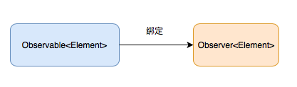

数据绑定（订阅）

在函数响应式编程里有一个比较重要的概念就是数据绑定（订阅）。就是指将可被监听的序列绑定到观察者上：
我们对比一下这两段代码：
let image: UIImage = UIImage(named: ...)
imageView.image = image
let image: Observable<UIImage> = Observable.from(...)
image.bind(to: imageView.rx.image)
第一段代码是我们非常熟悉的，它就是将一个单独的图片设置到imageView上。
第二段代码则是将一个图片序列同步到imageView上。这个序列里面的图片可以是异步产生的。这里定义的 image 就是上图中蓝色部分（可被监听的序列），imageView.rx.image就是上图中橙色部分（观察者）。而这种同步机制就是数据绑定（订阅）。